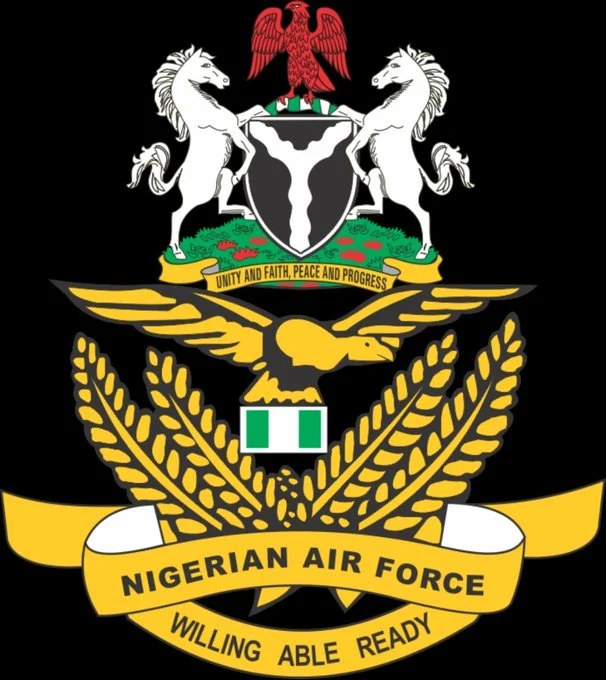

NAF redeploys senior officers, appoints new commanders

The Nigerian Air Force has approved a broad round of senior appointments and postings across its headquarters, operational commands, training institutions and other defence organisations. Chief of the Air Staff Air Marshal Sunday Aneke approved the changes on November 7, 2026, with the postings taking effect during November. The Air Force said the realignment is intended to strengthen command effectiveness, institutional capacity and operational readiness.
At Service Headquarters, Air Vice Marshal AK Ademuwagun was named Chief of Transformation and Innovation, while AVM PN Amadi was appointed Chief of Air Intelligence and AVM NN Ananaba Chief of Operations. Other headquarters appointments include AVM EE Efiom as Chief of Training and AVM AJ Laoye as Chief of Aircraft Engineering. Command changes include AVM NI Ilo as Air Officer Commanding, Tactical Air Command; AVM BR Mamman at Mobility Command; and AVM OS Ogunsina at Logistics Command. AVM MN Onyebashi and AVM FCS Nwakara will lead Special Operations Command and Ground Training Command, respectively.
Several senior officers were assigned to education and training institutions. AVM PB Philips will command the Armed Forces Command and Staff College, AVM AO Akinbunwa the Air Force War College, and AVM OC Ubadike the Air Force Institute of Technology. AVM AI Sambo was appointed Commandant of the Nigerian Air Force College of Logistics and Management, while AVM M Yusuf will serve as Deputy Commandant of the Nigerian Defence Academy.
The postings also cover Defence Headquarters and security agencies. AVM UK Abdullahi was named Director of Defence Operations, and AVM EOE Ebiowe was posted to the Office of the National Security Adviser as Deputy Coordinator, National Intelligence. AVM DDG Pwajok will be Director of Technical Services at the Defence Intelligence Agency, while AVM I Sani becomes Deputy Chief of Defence Intelligence. At the Defence Space Administration, AVM AA Suleh was appointed Deputy Chief, with AVM OA Oyename and AVM SS Lazarus taking director roles. AVM GI Jibia was named Deputy Force Commander of Operation Hadin Kai, and AVM JI Ukeh Commander of the Nigerian Air Defence Corps.
The Air Force said the exercise supports leadership renewal, accountability and operational effectiveness. Affected officers are expected to complete handover procedures by November 13, 2026.
Source: Punch